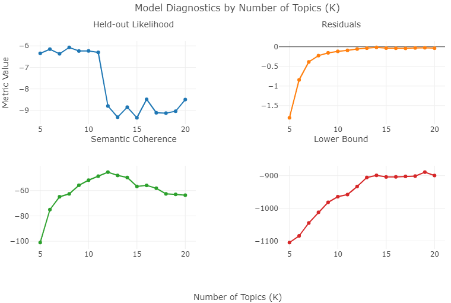

suppressPackageStartupMessages({
library(tidyr)
library(dplyr)
library(readxl)
library(gtsummary)
library(officer)
library(flextable)
library(ggplot2)
library(quanteda)
library(reticulate)
library(stopwords)
library(TextAnalysisR)
library(spacyr)
library(htmlwidgets)
library(stm)
library(dotenv)
library(ggdendro)
library(plotly)
library(httr)
library(jsonlite)
library(progress)
library(openxlsx)
library(stringr)
library(purrr)
library(text2vec)
library(stringdist)
library(DT)
})
# sentence_transformers <- import("sentence_transformers")
# sentence_model <- sentence_transformers$SentenceTransformer("all-MiniLM-L6-v2")
# stopwords <- stopwords("en", source = "snowball")Addressing the void of AI policies in education for individuals with learning disabilities
The website contains supplemental materials and code used to analyze text data in Authors (2025).
Load R Packages
Load Dataset
data <- read_excel("data/policyData.xlsx")
load("data/ai_ld_data.rda")Document-Level Analysis
Code
data <- read_excel("data/policyData.xlsx")
data_long <- data |>
pivot_longer(
cols = matches("^coding_\\d+$"),
names_to = "coding_id",
names_prefix = "coding_",
values_to = "coding_text",
values_drop_na = TRUE
) |>
mutate(
coding_id = as.integer(coding_id),
document_id = paste(ID, coding_id, sep = "_")
)
united_tbl <- unite_text_cols(data_long,
listed_vars = "coding_text")
documents <- data_long %>%
group_by(ID, doc_name, type, disability, SLD) %>%
summarise(
document_text = paste(coding_text, collapse = " "),
n_chunks = n(),
.groups = 'drop'
) %>%
mutate(
category = case_when(
disability == "Yes" & SLD == "Yes" ~ "SLD",
disability == "Yes" & SLD == "No" ~ "Other Disability",
disability == "No" & SLD == "No" ~ "General",
TRUE ~ "Uncategorized"
),
display_name = paste("Doc", ID),
doc_numeric_id = as.numeric(str_extract(display_name, "\\d+"))
) %>%
arrange(doc_numeric_id)
documents_filtered <- documents %>%
mutate(
doc_numeric_id = as.numeric(str_extract(display_name, "\\d+"))
) %>%
arrange(doc_numeric_id)
if(nrow(documents_filtered) == 0) {
stop("No documents remain after filtering! Check document lengths and categories.")
}
document_summary <- documents_filtered %>%
select(
Document = display_name,
`Document Name` = doc_name,
Type = type,
Disability = disability,
SLD = SLD,
Category = category,
`Coding Units` = n_chunks
)Code
documents <- data_long %>%
group_by(ID, doc_name, type, disability, SLD) %>%
summarise(
document_text = paste(coding_text, collapse = " "),
n_chunks = n(),
.groups = 'drop'
) %>%
mutate(
category = case_when(
disability == "Yes" & SLD == "Yes" ~ "SLD",
disability == "Yes" & SLD == "No" ~ "Other Disability",
disability == "No" & SLD == "No" ~ "General",
TRUE ~ "Uncategorized"
),
display_name = paste("Doc", ID),
doc_numeric_id = as.numeric(str_extract(display_name, "\\d+"))
) %>%
arrange(doc_numeric_id)
if(nrow(documents) == 0) {
stop("No documents remain after filtering! Check document lengths and categories.")
}
embeddings <- list()
for(cat in unique(documents$category)) {
cat_docs <- documents %>% filter(category == cat)
cat("\nEmbedding", nrow(cat_docs), cat, "documents:\n")
for(i in 1:nrow(cat_docs)) {
cat("-", cat_docs$display_name[i], "\n")
}
emb <- sentence_model$encode(cat_docs$document_text, convert_to_tensor = FALSE)
embeddings[[cat]] <- list(
embeddings = reticulate::py_to_r(emb),
texts = cat_docs$document_text,
doc_names = cat_docs$display_name,
doc_ids = cat_docs$ID,
actual_names = cat_docs$doc_name
)
}
other_categories <- names(embeddings)[names(embeddings) != "SLD"]
similarity_threshold <- 0.6
ld_similarities <- map_dfr(other_categories, function(other_cat) {
ld_emb <- embeddings$SLD$embeddings
other_emb <- embeddings[[other_cat]]$embeddings
expand_grid(
ld_doc = 1:nrow(ld_emb),
other_doc = 1:nrow(other_emb)
) %>%
mutate(
cosine_similarity = map2_dbl(ld_doc, other_doc, function(i, j) {
vec1 <- ld_emb[i, ]
vec2 <- other_emb[j, ]
sum(vec1 * vec2) / (sqrt(sum(vec1^2)) * sqrt(sum(vec2^2)))
}),
ld_doc_name = embeddings$SLD$doc_names[ld_doc],
other_doc_name = embeddings[[other_cat]]$doc_names[other_doc],
ld_doc_id = embeddings$SLD$doc_ids[ld_doc],
other_doc_id = embeddings[[other_cat]]$doc_ids[other_doc],
ld_actual_name = embeddings$SLD$actual_names[ld_doc],
other_actual_name = embeddings[[other_cat]]$actual_names[other_doc],
other_category = other_cat
)
}) %>%
mutate(
other_category = factor(other_category, levels = c("Other Disability", "General"))
)
create_document_heatmap <- function(similarities, title_suffix = "") {
documents_info <- documents_filtered
plot_data <- similarities %>%
mutate(
ld_label = str_trunc(ld_doc_name, 25),
other_label = str_trunc(other_doc_name, 25)
)
plot_data <- plot_data %>%
mutate(
ld_numeric_id = as.numeric(str_extract(ld_doc_name, "\\d+")),
other_numeric_id = as.numeric(str_extract(other_doc_name, "\\d+"))
)
ld_order <- plot_data %>%
arrange(ld_numeric_id) %>%
pull(ld_label) %>%
unique()
other_order <- plot_data %>%
arrange(other_numeric_id) %>%
pull(other_label) %>%
unique()
plot_data <- plot_data %>%
mutate(
ld_label = factor(ld_label, levels = rev(ld_order)),
other_label = factor(other_label, levels = other_order),
other_category = factor(other_category, levels = c("Other Disability", "General")),
tooltip_text = paste0(
"SLD: ", coalesce(ld_actual_name, ld_doc_name),
"<br>", other_category, ": ", coalesce(other_actual_name, other_doc_name),
"<br>Cosine Similarity: ", round(cosine_similarity, 3)
)
)
ggplot(plot_data, aes(x = other_label, y = ld_label, fill = cosine_similarity, text = tooltip_text)) +
geom_tile(color = "white", size = 0.1) +
geom_text(aes(label = round(cosine_similarity, 2),
color = ifelse(cosine_similarity > quantile(cosine_similarity, 0.75), "black", "white")),
size = 3.5, fontface = "bold", show.legend = FALSE) +
scale_fill_viridis_c(name = "Cosine\nSimilarity") +
scale_color_identity() +
guides(color = "none") +
facet_wrap(~other_category, scales = "free") +
theme_minimal(base_size = 11) +
theme(
strip.text.x = element_text(size = 11, color = "#3B3B3B"),
axis.text.x = element_text(angle = 45, hjust = 1, size = 10),
axis.text.y = element_text(size = 10),
axis.title.x = element_blank(),
axis.text.x.top = element_text(size = 12),
legend.title = element_text(size = 11, color = "#3B3B3B"),
legend.text = element_text(size = 11, color = "#3B3B3B"),
plot.title = element_text(size = 10, hjust = 0.5)
) + labs(y = "SLD Documents")
}
similarity_heatmap <- create_document_heatmap(ld_similarities, "SLD Focus")
similarity_heatmap_plotly <- similarity_heatmap %>%
ggplotly(tooltip = "text", width = 800, height = 500) %>%
layout(hovermode = "closest") %>%
style(hoverinfo = "text")Document Embedding Similarity Statistics Table
Code
similarity_stats <- ld_similarities %>%
group_by(other_category) %>%
summarise(
mean_similarity = round(mean(cosine_similarity), 3),
median_similarity = round(median(cosine_similarity), 3),
sd_similarity = round(sd(cosine_similarity), 3),
min_similarity = round(min(cosine_similarity), 3),
max_similarity = round(max(cosine_similarity), 3),
.groups = 'drop'
)
LD_Unique <- ld_similarities %>%
group_by(ld_doc_name) %>%
summarise(
max_similarity = max(cosine_similarity),
min_similarity = min(cosine_similarity),
max_idx = which.max(cosine_similarity),
match_doc = other_doc_name[max_idx],
match_cat = other_category[max_idx],
.groups = 'drop'
) %>%
select(-max_idx) %>%
filter(max_similarity < similarity_threshold) %>%
mutate(
doc_numeric_id = as.numeric(str_extract(ld_doc_name, "\\d+"))
) %>%
arrange(doc_numeric_id) %>%
mutate(gap_type = "LD_Unique")
missing_from_ld <- ld_similarities %>%
group_by(other_doc_name, other_category) %>%
summarise(
max_similarity = max(cosine_similarity),
min_similarity = min(cosine_similarity),
max_idx = which.max(cosine_similarity),
match_sld = ld_doc_name[max_idx],
.groups = 'drop'
) %>%
select(-max_idx) %>%
filter(max_similarity < similarity_threshold) %>%
mutate(
doc_numeric_id = as.numeric(str_extract(other_doc_name, "\\d+"))
) %>%
arrange(doc_numeric_id) %>%
mutate(gap_type = "Missing_from_SLD")
cross_policy <- ld_similarities %>%
group_by(ld_doc_name) %>%
summarise(
max_similarity = max(cosine_similarity),
min_similarity = min(cosine_similarity),
max_idx = which.max(cosine_similarity),
match_doc = other_doc_name[max_idx],
match_cat = other_category[max_idx],
.groups = 'drop'
) %>%
select(-max_idx) %>%
filter(max_similarity >= similarity_threshold & max_similarity < 0.8) %>%
mutate(
doc_numeric_id = as.numeric(str_extract(ld_doc_name, "\\d+"))
) %>%
arrange(doc_numeric_id) %>%
mutate(gap_type = "Cross-Policy_Document")Unique SLD Policy Documents
Lower similarity scores indicate greater uniqueness
Missing from SLD Policy Documents
Lower similarity scores indicate content missing from SLD policies
Cross Policy
Similarity scores between 0.6-0.8 indicate cross-policy learning potential
Code
cross_policy %>%
select(ld_doc_name, min_similarity, max_similarity, match_doc, match_cat, gap_type) %>%
DT::datatable(
options = list(
dom = 'Bfrtip',
buttons = c('copy', 'excel', 'pdf'),
pageLength = 10,
scrollX = TRUE
),
extensions = 'Buttons',
class = "cell-border stripe",
rownames = FALSE
) %>%
DT::formatRound(columns = c("min_similarity", "max_similarity"), digits = 3)Topic-Level Analysis
Topic-Level Similarity Heatmap
Code
data <- data %>%
mutate(
category = case_when(
disability == "Yes" & SLD == "Yes" ~ "SLD",
disability == "Yes" & SLD == "No" ~ "Other Disability",
disability == "No" & SLD == "No" ~ "General",
TRUE ~ "Uncategorized"
)
)
ld_docs <- data %>%
filter(category == "SLD") %>%
pivot_longer(
cols = matches("^coding_\\d+$"),
names_to = "coding_id",
names_prefix = "coding_",
values_to = "coding_text",
values_drop_na = TRUE
) %>%
mutate(
coding_id = as.integer(coding_id),
document_id = paste(ID, coding_id, sep = "_")
)
disability_docs <- data %>%
filter(category == "Other Disability") %>%
pivot_longer(
cols = matches("^coding_\\d+$"),
names_to = "coding_id",
names_prefix = "coding_",
values_to = "coding_text",
values_drop_na = TRUE
) %>%
mutate(
coding_id = as.integer(coding_id),
document_id = paste(ID, coding_id, sep = "_")
)
general_docs <- data %>%
filter(category == "General") %>%
pivot_longer(
cols = matches("^coding_\\d+$"),
names_to = "coding_id",
names_prefix = "coding_",
values_to = "coding_text",
values_drop_na = TRUE
) %>%
mutate(
coding_id = as.integer(coding_id),
document_id = paste(ID, coding_id, sep = "_")
)
common_words <- c("na", "may", "can", "[''']s")
united_tbl_ld <- unite_text_cols(ld_docs, listed_vars = "coding_text")
tokens_ld <- preprocess_texts(united_tbl_ld, text_field = "united_texts", verbose = FALSE)
toks_removed_ld <- tokens_remove(tokens_ld, pattern = stopwords, verbose = FALSE)
toks_removed_common_ld <- tokens_remove(toks_removed_ld, pattern = common_words, valuetype = "regex", verbose = FALSE)
toks_lemmatized_ld <- quanteda::tokens_wordstem(toks_removed_common_ld)
dfm_ld <- dfm(toks_lemmatized_ld)
united_tbl_disability <- unite_text_cols(disability_docs, listed_vars = "coding_text")
tokens_disability <- preprocess_texts(united_tbl_disability, text_field = "united_texts", verbose = FALSE)
toks_removed_disability <- tokens_remove(tokens_disability, pattern = stopwords, verbose = FALSE)
toks_removed_common_disability <- tokens_remove(toks_removed_disability, pattern = common_words, valuetype = "regex", verbose = FALSE)
toks_lemmatized_disability <- quanteda::tokens_wordstem(toks_removed_common_disability)
dfm_disability <- dfm(toks_lemmatized_disability)
united_tbl_general <- unite_text_cols(general_docs, listed_vars = "coding_text")
tokens_general <- preprocess_texts(united_tbl_general, text_field = "united_texts", verbose = FALSE)
toks_removed_general <- tokens_remove(tokens_general, pattern = stopwords, verbose = FALSE)
toks_removed_common_general <- tokens_remove(toks_removed_general, pattern = common_words, valuetype = "regex", verbose = FALSE)
toks_lemmatized_general <- quanteda::tokens_wordstem(toks_removed_common_general)
dfm_general <- dfm(toks_lemmatized_general)
out_ld <- quanteda::convert(dfm_ld, to = "stm")
topic_model_ld <- stm(
data = out_ld$meta,
documents = out_ld$documents,
vocab = out_ld$vocab,
max.em.its = 75,
init.type = "Spectral",
K = 10,
prevalence = ~ 1,
verbose = FALSE,
seed = 2025
)
out_disability <- quanteda::convert(dfm_disability, to = "stm")
topic_model_disability <- stm(
data = out_disability$meta,
documents = out_disability$documents,
vocab = out_disability$vocab,
max.em.its = 75,
init.type = "Spectral",
K = 10,
prevalence = ~ 1,
verbose = FALSE,
seed = 2025
)
out_general <- quanteda::convert(dfm_general, to = "stm")
topic_model_general <- stm(
data = out_general$meta,
documents = out_general$documents,
vocab = out_general$vocab,
max.em.its = 75,
init.type = "Spectral",
K = 10,
prevalence = ~ 1,
verbose = FALSE,
seed = 2025
)
top_terms_ld <- TextAnalysisR::select_top_topic_terms(topic_model_ld, top_term_n = 10, verbose = FALSE)
top_terms_disability <- TextAnalysisR::select_top_topic_terms(topic_model_disability, top_term_n = 10, verbose = FALSE)
top_terms_general <- TextAnalysisR::select_top_topic_terms(topic_model_general, top_term_n = 10, verbose = FALSE)
top_labeled_ld <- TextAnalysisR::generate_topic_labels(top_terms_ld, model = "gpt-4o", temperature = 0.5, verbose = FALSE)
top_labeled_disability <- TextAnalysisR::generate_topic_labels(top_terms_disability, model = "gpt-4o", temperature = 0.5, verbose = FALSE)
top_labeled_general <- TextAnalysisR::generate_topic_labels(top_terms_general, model = "gpt-4o", temperature = 0.5, verbose = FALSE)
top_labeled_ld$category <- "SLD"
top_labeled_disability$category <- "Other Disability"
top_labeled_general$category <- "General"
top_labeled_ld <- top_labeled_ld %>% mutate(topic = as.numeric(topic)) %>% arrange(topic)
top_labeled_disability <- top_labeled_disability %>% mutate(topic = as.numeric(topic)) %>% arrange(topic)
top_labeled_general <- top_labeled_general %>% mutate(topic = as.numeric(topic)) %>% arrange(topic)
gamma_ld <- data.frame(
topic = 1:length(topic_model_ld$theta[1,]),
gamma = colMeans(topic_model_ld$theta),
category = "SLD"
)
gamma_disability <- data.frame(
topic = 1:length(topic_model_disability$theta[1,]),
gamma = colMeans(topic_model_disability$theta),
category = "Other Disability"
)
gamma_general <- data.frame(
topic = 1:length(topic_model_general$theta[1,]),
gamma = colMeans(topic_model_general$theta),
category = "General"
)
all_gamma <- bind_rows(gamma_ld, gamma_disability, gamma_general)
all_labeled_topics <- bind_rows(top_labeled_ld, top_labeled_disability, top_labeled_general) %>%
left_join(all_gamma, by = c("topic", "category")) %>%
mutate(
topic_gamma = paste0("Topic ", topic, " (", round(gamma, 3), ")")
) %>%
arrange(category, topic)
get_topic_texts <- function(top_terms_df) {
top_terms_df %>%
group_by(topic) %>%
summarise(text = paste(term, collapse = " ")) %>%
arrange(topic) %>%
pull(text)
}
ld_topic_texts <- get_topic_texts(top_terms_ld)
disability_topic_texts <- get_topic_texts(top_terms_disability)
general_topic_texts <- get_topic_texts(top_terms_general)
get_topic_embeddings <- function(topic_texts, sentence_model) {
emb <- sentence_model$encode(topic_texts, convert_to_tensor = FALSE)
reticulate::py_to_r(emb)
}
ld_topic_emb <- get_topic_embeddings(ld_topic_texts, sentence_model)
disability_topic_emb <- get_topic_embeddings(disability_topic_texts, sentence_model)
general_topic_emb <- get_topic_embeddings(general_topic_texts, sentence_model)
calculate_topic_embedding_similarity <- function(emb1, emb2, labels1, labels2, cat1, cat2) {
norm_emb1 <- emb1 / sqrt(rowSums(emb1^2))
norm_emb2 <- emb2 / sqrt(rowSums(emb2^2))
similarity_matrix <- norm_emb1 %*% t(norm_emb2)
similarity_df <- expand_grid(
topic1 = 1:nrow(norm_emb1),
topic2 = 1:nrow(norm_emb2)
) %>%
mutate(
label1 = labels1[topic1],
label2 = labels2[topic2],
cosine_similarity = as.vector(similarity_matrix),
cat1 = cat1,
cat2 = cat2,
comparison = paste(cat1, "vs", cat2)
)
return(similarity_df)
}
ld_labels <- top_labeled_ld %>%
arrange(topic) %>%
pull(topic_label)
disability_labels <- top_labeled_disability %>%
arrange(topic) %>%
pull(topic_label)
general_labels <- top_labeled_general %>%
arrange(topic) %>%
pull(topic_label)
ld_vs_disability_cosine <- calculate_topic_embedding_similarity(
ld_topic_emb, disability_topic_emb,
ld_labels, disability_labels,
"SLD", "Other Disability"
)
ld_vs_general_cosine <- calculate_topic_embedding_similarity(
ld_topic_emb, general_topic_emb,
ld_labels, general_labels,
"SLD", "General"
)
ld_focused_similarities <- bind_rows(
ld_vs_disability_cosine,
ld_vs_general_cosine
)
topic_similarities <- ld_focused_similarities %>%
left_join(
top_labeled_ld %>%
arrange(topic) %>%
select(topic, topic_label) %>%
rename(ld_topic_label = topic_label),
by = c("topic1" = "topic")
) %>%
mutate(
ld_topic_name = paste("Topic", topic1),
other_topic_name = paste("Topic", topic2),
ld_topic_id = label1,
other_topic_id = label2,
other_category = cat2
) %>%
left_join(
top_labeled_disability %>%
arrange(topic) %>%
select(topic, topic_label) %>%
rename(disability_topic_label = topic_label),
by = c("topic2" = "topic")
) %>%
left_join(
top_labeled_general %>%
arrange(topic) %>%
select(topic, topic_label) %>%
rename(general_topic_label = topic_label),
by = c("topic2" = "topic")
) %>%
mutate(
other_topic_label = case_when(
cat2 == "Other Disability" ~ disability_topic_label,
cat2 == "General" ~ general_topic_label,
TRUE ~ as.character(topic2)
)
) %>%
select(
ld_topic_name, other_topic_name, ld_topic_id, other_topic_id,
ld_topic_label, other_topic_label, cosine_similarity, other_category
) %>%
mutate(
other_category = factor(other_category, levels = c("Other Disability", "General"))
)
topic_similarities <- topic_similarities %>%
distinct(ld_topic_name, other_topic_name, other_category, .keep_all = TRUE)
create_topic_heatmap <- function(similarities, title_suffix = "") {
plot_data <- similarities %>%
mutate(
ld_label = str_trunc(ld_topic_name, 25),
other_label = str_trunc(other_topic_name, 25)
)
plot_data <- plot_data %>%
mutate(
ld_numeric_id = ld_topic_id,
other_numeric_id = other_topic_id
)
ld_order <- plot_data %>%
arrange(ld_numeric_id) %>%
pull(ld_label) %>%
unique()
other_order <- plot_data %>%
arrange(other_numeric_id) %>%
pull(other_label) %>%
unique()
plot_data <- plot_data %>%
mutate(
ld_label = factor(ld_label, levels = rev(ld_order)),
other_label = factor(other_label, levels = other_order),
tooltip_text = paste0(
"SLD: ", ld_topic_label,
"<br>", other_category, ": ", other_topic_label,
"<br>Cosine Similarity: ", round(cosine_similarity, 3)
)
)
ggplot(plot_data, aes(x = other_label, y = ld_label, fill = cosine_similarity, text = tooltip_text)) +
geom_tile(color = "white", size = 0.1) +
geom_text(aes(label = round(cosine_similarity, 2),
color = ifelse(cosine_similarity > quantile(cosine_similarity, 0.75), "black", "white")),
size = 3.5, fontface = "bold", show.legend = FALSE) +
scale_fill_viridis_c(name = "Cosine\nSimilarity", option = "plasma") +
scale_color_identity() +
guides(color = "none") +
facet_wrap(~other_category, scales = "free", ncol=1) +
theme_minimal(base_size = 11) +
theme(
strip.text.x = element_text(size = 11, color = "#3B3B3B"),
axis.text.x = element_text(angle = 45, hjust = 1, size = 10),
axis.text.y = element_text(size = 10),
axis.title.x = element_blank(),
axis.text.x.top = element_text(size = 12),
legend.title = element_text(size = 11, color = "#3B3B3B"),
legend.text = element_text(size = 11, color = "#3B3B3B"),
plot.title = element_text(size = 10, hjust = 0.5)
) + labs(y = "SLD Topics")
}
topic_similarity_heatmap <- create_topic_heatmap(topic_similarities, "SLD Topics Focus")
topic_similarity_heatmap_plotly <- topic_similarity_heatmap %>%
ggplotly(tooltip = "text", width = 800, height = 1000) %>%
layout(
hovermode = "closest",
margin = list(b = 70)
) %>%
style(hoverinfo = "text")Code
topic_similarity_stats <- topic_similarities %>%
group_by(other_category) %>%
summarise(
mean_similarity = round(mean(cosine_similarity), 3),
median_similarity = round(median(cosine_similarity), 3),
sd_similarity = round(sd(cosine_similarity), 3),
min_similarity = round(min(cosine_similarity), 3),
max_similarity = round(max(cosine_similarity), 3),
.groups = 'drop'
) %>%
arrange(other_category)
topic_similarity_threshold <- 0.6
LD_Unique_topics <- topic_similarities %>%
group_by(ld_topic_name, ld_topic_label) %>%
summarise(
max_similarity = max(cosine_similarity),
min_similarity = min(cosine_similarity),
max_idx = which.max(cosine_similarity),
match_topic = other_topic_name[max_idx],
match_cat = other_category[max_idx],
.groups = 'drop'
) %>%
select(-max_idx) %>%
filter(max_similarity < topic_similarity_threshold) %>%
mutate(
topic_numeric_id = as.numeric(str_extract(ld_topic_name, "\\d+"))
) %>%
arrange(topic_numeric_id) %>%
mutate(gap_type = "LD_Unique_Strength")
missing_from_ld_topics <- topic_similarities %>%
group_by(other_topic_name, other_topic_label, other_category) %>%
summarise(
max_similarity = max(cosine_similarity),
min_similarity = min(cosine_similarity),
max_idx = which.max(cosine_similarity),
match_sld = ld_topic_name[max_idx],
.groups = 'drop'
) %>%
select(-max_idx) %>%
filter(max_similarity < topic_similarity_threshold) %>%
mutate(
topic_numeric_id = as.numeric(str_extract(other_topic_name, "\\d+"))
) %>%
arrange(topic_numeric_id) %>%
mutate(gap_type = "Missing_from_LD")
cross_policy_topics <- topic_similarities %>%
group_by(ld_topic_name, ld_topic_label) %>%
summarise(
max_similarity = max(cosine_similarity),
min_similarity = min(cosine_similarity),
max_idx = which.max(cosine_similarity),
match_topic = other_topic_name[max_idx],
match_cat = other_category[max_idx],
.groups = 'drop'
) %>%
select(-max_idx) %>%
filter(max_similarity >= topic_similarity_threshold & max_similarity < 0.8) %>%
mutate(
topic_numeric_id = as.numeric(str_extract(ld_topic_name, "\\d+"))
) %>%
arrange(topic_numeric_id) %>%
mutate(gap_type = "Cross-Policy_Learning")Topic-Level Similarity Statistics Table
Unique Topics from SLD Policies
Lower similarity scores indicate greater uniqueness
Code
LD_Unique_topics %>%
select(-gap_type, -match_topic, -topic_numeric_id) %>%
DT::datatable(
options = list(
dom = 'Bfrtip',
buttons = c('copy', 'excel', 'pdf'),
pageLength = 10,
scrollX = TRUE
),
extensions = 'Buttons',
class = "cell-border stripe",
rownames = FALSE
) %>%
DT::formatRound(columns = c("min_similarity", "max_similarity"), digits = 3)Missing Topics from LD Policies
Lower similarity scores indicate content missing from SLD policies
Code
missing_from_ld_topics %>%
select(-gap_type, -topic_numeric_id) %>%
DT::datatable(
options = list(
dom = 'Bfrtip',
buttons = c('copy', 'excel', 'pdf'),
pageLength = 10,
scrollX = TRUE
),
extensions = 'Buttons',
class = "cell-border stripe",
rownames = FALSE
) %>%
DT::formatRound(columns = c("min_similarity", "max_similarity"), digits = 3)Cross-Policy Learning Opportunities
Similarity scores between 0.6-0.8 indicate cross-policy learning potential
Code
cross_policy_topics %>%
select(-gap_type, -match_topic, -topic_numeric_id) %>%
DT::datatable(
options = list(
dom = 'Bfrtip',
buttons = c('copy', 'excel', 'pdf'),
pageLength = 10,
scrollX = TRUE
),
extensions = 'Buttons',
class = "cell-border stripe",
rownames = FALSE
) %>%
DT::formatRound(columns = c("min_similarity", "max_similarity"), digits = 3)Participants
Code
# single Choice Variables
single_tbl <- delphiFirst %>%
select(spanish_hispanic_latino, sex) %>%
pivot_longer(everything(), names_to = "Variable", values_to = "Choice") %>%
count(Variable, Choice) %>%
mutate(
Percent = round(n / nrow(delphiFirst) * 100, 1),
`N (%)` = paste0(n, " (", Percent, "%)"),
Variable = case_when(
Variable == "spanish_hispanic_latino" ~ "Spanish/Hispanic/Latino",
Variable == "sex" ~ "Sex",
TRUE ~ Variable
)
) %>%
select(Variable, Choice, `N (%)`)
# openxlsx::write.xlsx(single_tbl, "data/single_tbl.xlsx")Code
# Multiple Choice Variables
total_n <- nrow(delphiFirst)
summarize_multichoice <- function(data, var, var_label) {
data %>%
pull({{ var }}) %>%
str_split(",\\s*") %>%
unlist() %>%
str_trim() %>%
table() %>%
sort(decreasing = TRUE) %>%
as.data.frame() %>%
rename(Choice = ".", Count = "Freq") %>%
mutate(
Percent = round(Count / total_n * 100, 1),
`N (%)` = paste0(Count, " (", Percent, "%)"),
Variable = var_label
) %>%
select(Variable, Choice, `N (%)`)
}
position_tbl <- summarize_multichoice(delphiFirst, position, "Position")
school_tbl <- summarize_multichoice(delphiFirst, school_level, "School Level")
race_tbl <- summarize_multichoice(delphiFirst, race, "Race")
multi_tbl <- bind_rows(position_tbl, school_tbl, race_tbl)
# openxlsx::write.xlsx(multi_tbl, "data/multi_tbl.xlsx")Word Frequency
Code
tokens <- preprocess_texts(united_tbl, text_field = "united_texts", verbose = FALSE)
tokens_collocations <- detect_multi_word_expressions(tokens, size = 2:5, min_count = 2)
tokens_dict <- quanteda::dictionary(
list(
custom = c(
"access to",
"ai systems",
"artificial intelligence",
"assistive technology",
"automated systems",
"best practices",
"civil rights",
"decision making",
"developers should",
"educational settings",
"federal government",
"intelligence systems",
"learning disability",
"learning disabilities",
"machine learning",
"safety institute",
"school district",
"students with disabilities",
"virtual environments"
)
)
)
compound_tokens <- function(tokens, dict) {
quanteda::tokens_compound(
tokens,
pattern = dict,
concatenator = "_",
valuetype = "glob",
window = 0,
case_insensitive = TRUE,
join = TRUE,
keep_unigrams = FALSE,
verbose = TRUE
)
}
tokens_compound <- compound_tokens(tokens, tokens_dict)
dfm_object <- dfm(tokens_compound)
word_frequency_plot <- plot_word_frequency(dfm_object, n = 20)
Remove Predefined Stopwords
Code
toks_removed <- tokens_remove(tokens_compound, pattern = stopwords, verbose = FALSE)
dfm_init <- dfm(toks_removed)
word_frequency_remove_stopwords <- plot_word_frequency(dfm_init, n = 20)
Remove Common Words in the Dataset
Code
common_words <- c("na", "may", "can", "[''']s")
toks_removed_common <- tokens_remove(toks_removed,
pattern = common_words,
valuetype = "regex",
verbose = FALSE)
dfm_removed <- dfm(toks_removed_common)
word_frequency_remove_common <- plot_word_frequency(dfm_removed, n = 20)
Lemmatize Tokens
Code
texts <- sapply(toks_removed_common, paste, collapse = " ")
parsed <- spacy_parse(x = texts, lemma = TRUE, entity = FALSE, pos = FALSE)
toks_lemmatized <- as.tokens(parsed, use_lemma = TRUE)
dfm <- dfm(toks_lemmatized)
word_frequency_lemmatized <- plot_word_frequency(dfm, n = 20)
Model Diagnostics (Optimal Topic Numbers)
Code
texts <- sapply(toks_removed_common, paste, collapse = " ")
parsed <- spacy_parse(x = texts, lemma = TRUE, entity = FALSE, pos = FALSE)
toks_lemmatized <- as.tokens(parsed, use_lemma = TRUE)
dfm <- dfm(toks_lemmatized)
word_frequency_lemmatized <- plot_word_frequency(dfm, n = 20)
evaluate_optimal_topic_number(
dfm_object = dfm,
topic_range = 2:8,
max.em.its = 50,
categorical_var = NULL,
continuous_var = "",
height = 600,
width = 800,
verbose = TRUE) 
Structural Topic Modeling
Code
out <- quanteda::convert(dfm, to = "stm")
topic_model <- stm(
data = out$meta,
documents = out$documents,
vocab = out$vocab,
max.em.its = 75,
init.type = "Spectral",
K = 35,
prevalence = ~ c("disability", "SLD"),
verbose = FALSE,
seed = 1234)
top_topic_terms <- TextAnalysisR::select_top_topic_terms(
stm_model = topic_model,
top_term_n = 10,
verbose = FALSE
)
top_topic_terms %>%
mutate_if(is.numeric, ~ round(., 3)) %>%
DT::datatable(
options = list(
dom = 'Bfrtip',
buttons = c('copy', 'excel', 'pdf'),
pageLength = 10,
scrollX = TRUE
),
extensions = 'Buttons',
class = "cell-border stripe",
rownames = FALSE
)Generate Policy Topic Labels Using OpenAI’s API
top_labeled_topic_terms <- TextAnalysisR::generate_topic_labels(
top_labeled_topic_terms ,
model = "gpt-3.5-turbo",
temperature = 0.5,
verbose = FALSE)Code
# openxlsx::write.xlsx(top_labeled_topic_terms, "data/top_labeled_topic_terms.xlsx")Probability of Words Observed in Each Topic (Beta)
word_probability_plot <- word_probability_plot(
top_labeled_topic_terms,
topic_label = "topic_label",
ncol = 2,
height = 5000,
width = 1500)Generate Policy Survey Items Using OpenAI’s API
Code
# Reference: TextAnalysisR::generate_topic_labels()
top_labeled_human_loop <- read_excel("data/top_labeled_topic_terms_human_loop.xlsx")
generate_survey_items <- function(top_labeled_human_loop,
topic_cluster_df,
model = "gpt-3.5-turbo",
temperature = 0,
verbose = TRUE) {
if (file.exists(".env")) {
dotenv::load_dot_env()
openai_api_key <- Sys.getenv("OPENAI_API_KEY")
if (openai_api_key == "") {
stop("OPENAI_API_KEY not found in .env file")
}
} else {
stop(".env file not found")
}
system <- "
You are a highly skilled survey designer specializing in creating Likert-scale survey items for educational policy research. Your task is to generate clear, concise survey items that assess the importance of various AI policy aspects for students with learning disabilities.
Guidelines for generating survey items:
1. Format and Structure
- Create statements that can be rated on a 5-point Likert scale (1=Strongly Disagree to 5=Strongly Agree)
- Keep items clear, concise, and focused on a single concept
- Use active voice and present tense
- Avoid double-barreled questions or complex statements
2. Content Focus
- Focus on the importance or necessity of the policy aspect
- Use person-first language (e.g., 'students with learning disabilities' instead of 'disabled students')
- Ensure items are specific and actionable
- Avoid jargon unless necessary for technical accuracy
3. Clarity and Precision
- Use simple, direct language
- Avoid ambiguous terms or complex sentence structures
- Make sure each item measures exactly one concept
- Ensure items are relevant to educational settings
4. Response Scale Considerations
- Frame items to work well with a 5-point Likert scale
- Avoid extreme language that might force responses to one end of the scale
- Ensure items can be meaningfully rated on the agree-disagree continuum
Example
----------
Top Terms (highest to lowest beta score):
virtual manipulatives (.035)
manipulatives (.022)
mathematical (.014)
app (.013)
solving (.013)
learning disability (.012)
algebra (.012)
area (.011)
tool (.010)
concrete manipulatives (.010)
Generated Survey Item:
AI-powered visual manipulatives should be made available to support mathematical problem-solving for students with learning disabilities.
Focus on creating clear, measurable items that capture the essence of each topic while following these guidelines.
"
top_topic_terms <- top_labeled_human_loop |>
dplyr::group_by(topic) %>%
dplyr::arrange(desc(beta)) %>%
dplyr::ungroup()
unique_topics <- top_topic_terms %>%
dplyr::distinct(topic) %>%
dplyr::arrange(as.numeric(topic)) %>%
dplyr::mutate(topic = row_number(), survey_item = NA)
if (verbose) {
if (!requireNamespace("progress", quietly = TRUE)) {
utils::install.packages("progress")
}
pb <- progress::progress_bar$new(
format = " Processing [:bar] :percent ETA: :eta",
total = nrow(unique_topics),
clear = FALSE, width = 60 )
}
for (i in seq_len(nrow(unique_topics))) {
if (verbose) {
pb$tick()
}
current_topic <- unique_topics$topic[i]
selected_terms <- top_topic_terms %>%
dplyr::filter(topic == current_topic) %>%
dplyr::pull(term)
user <- paste0(
"You have a topic with keywords listed from most to least significant:",
paste(selected_terms, collapse = ", "), "\n\n",
"Please create a single survey item that:\n",
"1. Captures the essence of this topic\n",
"2. Can be rated on a 5-point Likert scale (1=Strongly Disagree to 5=Strongly Agree)\n",
"3. Focuses on the importance of this policy aspect\n",
"4. Uses person-first language\n",
"5. Is clear, concise, and specific"
)
body_list <- list(
model = model,
messages = list(
list(role = "system", content = system),
list(role = "user", content = user)
),
temperature = temperature,
max_tokens = 50
)
response <- httr::POST(
url = "https://api.openai.com/v1/chat/completions",
httr::add_headers(
`Content-Type` = "application/json",
`Authorization` = paste("Bearer", openai_api_key)
),
body = jsonlite::toJSON(body_list, auto_unbox = TRUE),
encode = "json"
)
if (httr::status_code(response) != 200) {
warning(sprintf("OpenAI API request failed for topic '%s': %s",
current_topic, httr::content(response, "text", encoding = "UTF-8")))
next
}
res_json <- jsonlite::fromJSON(httr::content(response, "text", encoding = "UTF-8"))
if (verbose) {
cat("Response JSON structure for topic", i, ":\n")
print(str(res_json))
}
if (!is.null(res_json$choices) && nrow(res_json$choices) > 0) {
if (!is.null(res_json$choices$message$content)) {
survey_item <- res_json$choices$message$content[1]
survey_item <- trimws(survey_item)
survey_item <- gsub('^"(.*)"$', '\\1', survey_item)
unique_topics$survey_item[i] <- survey_item
} else {
warning(sprintf("Unexpected response structure for topic '%s': %s", current_topic, jsonlite::toJSON(res_json, auto_unbox = TRUE)))
next
}
} else {
warning(sprintf("Unexpected response structure for topic '%s': %s", current_topic, jsonlite::toJSON(res_json, auto_unbox = TRUE)))
next
}
Sys.sleep(1)
}
top_labeled_topic_terms <- top_topic_terms %>%
dplyr::left_join(unique_topics, by = "topic") %>%
dplyr::select(survey_item, topic, term, beta) %>%
dplyr::arrange(topic, desc(beta))
return(top_labeled_topic_terms)
}policy_survey_items <- generate_survey_items(
top_labeled_human_loop,
# topic_cluster_df,
model = "gpt-3.5-turbo",
temperature = 0,
verbose = TRUE)Round 1 Delphi Survey Results Table
Decision Rule Based on Experts’ Consensus and Content Validity Ratio (CVR):
- 75% or more of experts agree (Rating ≥ 4) & CVR >= 0.60 → Retain
- 70% or more of experts agree (Rating ≥ 4) & CVR >= 0.60 → Consider
- 75% or more of experts agree (Rating ≥ 4) & CVR < 0.60 → Consider
- Otherwise → Revise/Remove
Code
delphiFirst <- read_excel("data/delphiFirst.xlsx")
likert <- c(
"Strongly Disagree" = 1,
"Disagree" = 2,
"Neutral" = 3,
"Agree" = 4,
"Strongly Agree" = 5
)
question_levels <- sort(as.numeric(gsub("Q", "", unique(delphiFirst %>%
select(matches("^Q[0-9]+$")) %>%
names()))))
question_levels <- paste0("Q", question_levels)
delphi_long <- delphiFirst %>%
pivot_longer(
cols = -c(
ID,
position:zip_code,
starts_with("Q33_"),
"Q34"
),
names_to = "Question",
values_to = "Rating"
) %>%
mutate(
Rating = likert[Rating],
Question = factor(Question, levels = question_levels)
)
round_1_results <- delphi_long %>%
group_by(Question) %>%
summarise(
Total = n(),
Strongly_Disagree = sum(Rating == 1),
Disagree = sum(Rating == 2),
Neutral = sum(Rating == 3),
Agree = sum(Rating == 4),
Strongly_Agree = sum(Rating == 5),
Agreement_Count = sum(Rating >= 4),
Percent_Agreement = round((Agreement_Count / Total) * 100, 1),
Mean = round(mean(Rating), 2),
SD = round(sd(Rating), 2),
Essential = sum(Rating >= 4),
CVR = round((Essential - (Total / 2)) / (Total / 2), 3),
IQR = IQR(Rating),
Consensus_Decision = case_when(
Percent_Agreement >= 75 ~ "Retain",
Percent_Agreement >= 70 ~ "Consider",
TRUE ~ "Revise/Remove"
),
CVR_Decision = ifelse(CVR >= 0.60, "Retain", "Revise/Remove"),
Final_Decision = case_when(
Percent_Agreement >= 75 & CVR >= 0.60 ~ "Retain",
Percent_Agreement >= 70 & CVR >= 0.60 ~ "Consider",
Percent_Agreement >= 75 & CVR < 0.60 ~ "Consider",
TRUE ~ "Revise/Remove"
),
.groups = 'drop'
) %>%
ungroup() %>%
mutate(
Question = factor(
Question,
levels = Question[order(as.numeric(gsub("Q", "", Question)))]
)
)
# openxlsx::write.xlsx(round_1_results, "results/round_1_results.xlsx", rowNames = FALSE)
round_1_results_label <- read_excel("results/round_1_results_label.xlsx")Round 1 Delphi Survey Results Plot
Code
round_1_results <- round_1_results %>%
mutate(Final_Decision = factor(Final_Decision, levels = c("Retain", "Consider", "Revise/Remove")))
round_1_results <- round_1_results %>%
mutate(
tooltip_label = paste0(
"Agreement: ", Percent_Agreement, "%\n",
"CVR: ", round(CVR, 2), "\n",
"Final Decision: ", Final_Decision
)
)
round_1_plot <- ggplot(round_1_results, aes(
x = reorder(Question, Percent_Agreement),
y = Percent_Agreement,
fill = Final_Decision,
text = tooltip_label
)) +
geom_col() +
geom_hline(yintercept = 75, linetype = "dashed", color = "blue") +
coord_flip() +
labs(
title = "",
subtitle = "",
x = "Question",
y = "Percent Agreement",
fill = "Final Decision"
) +
scale_fill_manual(values = c(
"Retain" = "darkgreen",
"Consider" = "#568203",
"Revise/Remove" = "orange"
)) +
theme_minimal(base_size = 12) +
theme(
axis.text.x = element_text(size = 12),
axis.text.y = element_text(size = 12),
axis.title.x = element_text(size = 12),
axis.title.y = element_text(size = 12),
legend.position = "right",
legend.text = element_text(size = 12)
)
round_1_plotly <- plotly::ggplotly(round_1_plot, width = 800, height = 700, tooltip = "text") %>%
plotly::layout(
annotations = list(
list(
x = 0,
y = -0.16,
text = "Blue line = 75% agreement threshold (Delphi consensus)",
showarrow = FALSE,
xref = "paper",
yref = "paper",
font = list(size = 16, color = "gray40")
)
),
margin = list(b = 100, t = 40, l = 40)
)Round 1 Response Distribution by Question
Code
round_1_dist <- delphi_long %>%
mutate(Response_Label = case_when(
Rating == 1 ~ "Strongly Disagree",
Rating == 2 ~ "Disagree",
Rating == 3 ~ "Neutral",
Rating == 4 ~ "Agree",
Rating == 5 ~ "Strongly Agree"
)) %>%
count(Question, Response_Label) %>%
group_by(Question) %>%
mutate(
Percentage = round(n / sum(n) * 100, 1),
Rating_Count = ifelse(Response_Label == "Strongly Agree", n, 0),
Max_Rating = max(Rating_Count)
)
round_1_dist <- round_1_dist %>%
mutate(Response_Label = factor(Response_Label, levels = c("Strongly Disagree", "Disagree", "Neutral", "Agree", "Strongly Agree")))
round_1_dist <- round_1_dist %>%
left_join(
round_1_results %>% select(Question, Percent_Agreement),
by = "Question"
)
round_1_dist_plot <- ggplot(
round_1_dist,
aes(x = reorder(Question, Percent_Agreement), y = n, fill = Response_Label)
) +
geom_col(position = "stack") +
coord_flip() +
labs(
title = "Distribution of Responses by Question",
x = "Question",
y = "Number of Responses",
fill = "Rating"
) +
scale_fill_brewer(type = "div", palette = "RdYlGn") +
guides(fill = guide_legend(reverse = FALSE)) +
theme_minimal(base_size = 12) +
theme(
panel.grid.minor = element_blank(),
panel.grid.major.x = element_line(color = "gray90"),
panel.grid.major.y = element_line(color = "gray90"),
axis.text.x = element_text(size = 12),
axis.text.y = element_text(size = 12),
axis.title.x = element_text(size = 12),
axis.title.y = element_text(size = 12),
legend.position = "right",
legend.text = element_text(size = 12)
)
round_1_dist_plotly <- plotly::ggplotly(round_1_dist_plot, width = 800, height = 700)Round 2 Delphi Survey Item Development
Code
united_tbl <- unite_text_cols(delphiFirst,
listed_vars = "Q34")
tokens <- preprocess_texts(united_tbl, text_field = "united_texts", verbose = FALSE)
tokens_collocations <- detect_multi_word_expressions(tokens, size = 2:5, min_count = 2)
dfm_object <- dfm(tokens)
word_frequency_plot <- plot_word_frequency(dfm_object, n = 20)
stopwords <- stopwords("en", source = "snowball")
toks_removed <- tokens_remove(tokens, pattern = stopwords, verbose = FALSE)
dfm_init <- dfm(toks_removed)
word_frequency_remove_stopwords <- plot_word_frequency(dfm_init, n = 20)
common_words <- c("also")
toks_removed_common <- tokens_remove(toks_removed,
pattern = common_words,
valuetype = "regex",
verbose = FALSE)
dfm_removed <- dfm(toks_removed_common)
word_frequency_remove_common <- plot_word_frequency(dfm_removed, n = 20)
texts <- sapply(toks_removed_common, paste, collapse = " ")
parsed <- spacy_parse(x = texts, lemma = TRUE, entity = FALSE, pos = FALSE)
toks_lemmatized <- as.tokens(parsed, use_lemma = TRUE)
dfm <- dfm(toks_lemmatized)
word_frequency_lemmatized <- plot_word_frequency(dfm, n = 20)
evaluate_optimal_topic_number(
dfm_object = dfm,
topic_range = 5:20,
max.em.its = 75,
categorical_var = NULL,
continuous_var = "",
height = 600,
width = 800,
verbose = FALSE)
Code
out <- quanteda::convert(dfm, to = "stm")
topic_model_round_1 <- stm(
data = out$meta,
documents = out$documents,
vocab = out$vocab,
max.em.its = 75,
init.type = "Spectral",
K = 11,
prevalence = ~ 1,
verbose = FALSE,
seed = 1234)
top_topic_terms_round_1 <- TextAnalysisR::select_top_topic_terms(
stm_model = topic_model_round_1,
top_term_n = 10,
verbose = FALSE
)
top_labeled_topic_terms_round_1 <- TextAnalysisR::generate_topic_labels(
top_topic_terms_round_1 ,
model = "gpt-3.5-turbo",
temperature = 0.5,
verbose = FALSE)
# openxlsx::write.xlsx(top_labeled_topic_terms_round_1, "data/top_labeled_topic_terms_round_1.xlsx")Code
policy_survey_items_round_1 <- generate_survey_items(
top_labeled_topic_terms_round_1,
model = "gpt-3.5-turbo",
temperature = 0,
verbose = TRUE)
policy_survey_items_round_1_td <-
policy_survey_items_round_1 %>%
group_by(topic) %>%
summarise(
survey_item = first(survey_item),
term_beta = paste(term, "(", round(beta, 3), ")", collapse = ", ")
) %>%
ungroup()
# openxlsx::write.xlsx(policy_survey_items_round_1_td, "data/policy_survey_items_round_1_td.xlsx")Round 2 Delphi Survey Results Table
Decision Rule Based on Experts’ Consensus and Content Validity Ratio (CVR):
- 75% or more of experts agree (Rating ≥ 4) & CVR >= 0.60 → Retain
- 70% or more of experts agree (Rating ≥ 4) & CVR >= 0.60 → Consider
- 75% or more of experts agree (Rating ≥ 4) & CVR < 0.60 → Consider
- Otherwise → Revise/Remove
Code
delphiSecond <- read_excel("data/delphiSecond.xlsx")
likert <- c(
"Strongly Disagree" = 1,
"Disagree" = 2,
"Neutral" = 3,
"Agree" = 4,
"Strongly Agree" = 5
)
question_levels <- sort(as.numeric(gsub("Q", "", unique(delphiSecond %>%
select(matches("^Q[0-9]+$")) %>%
names()))))
question_levels <- paste0("Q", question_levels)
delphi_long_2 <- delphiSecond %>%
pivot_longer(
cols = -c(
ID,
starts_with("Q15_"),
"Q16"
),
names_to = "Question",
values_to = "Rating"
) %>%
mutate(
Rating = likert[Rating],
Question = factor(Question, levels = question_levels)
)
round_2_results <- delphi_long_2 %>%
group_by(Question) %>%
summarise(
Total = n(),
Strongly_Disagree = sum(Rating == 1),
Disagree = sum(Rating == 2),
Neutral = sum(Rating == 3),
Agree = sum(Rating == 4),
Strongly_Agree = sum(Rating == 5),
Agreement_Count = sum(Rating >= 4),
Percent_Agreement = round((Agreement_Count / Total) * 100, 1),
Mean = round(mean(Rating), 2),
SD = round(sd(Rating), 2),
Essential = sum(Rating >= 4),
CVR = round((Essential - (Total / 2)) / (Total / 2), 3),
IQR = IQR(Rating),
Consensus_Decision = case_when(
Percent_Agreement >= 75 ~ "Retain",
Percent_Agreement >= 70 ~ "Consider",
TRUE ~ "Revise/Remove"
),
CVR_Decision = ifelse(CVR >= 0.60, "Retain", "Revise/Remove"),
Final_Decision = case_when(
Percent_Agreement >= 75 & CVR >= 0.60 ~ "Retain",
Percent_Agreement >= 70 & CVR >= 0.60 ~ "Consider",
Percent_Agreement >= 75 & CVR < 0.60 ~ "Consider",
TRUE ~ "Revise/Remove"
),
.groups = 'drop'
) %>%
ungroup() %>%
mutate(
Question = factor(
Question,
levels = Question[order(as.numeric(gsub("Q", "", Question)))]
)
)
openxlsx::write.xlsx(round_2_results, "results/round_2_results.xlsx", rowNames = FALSE)
# round_2_results_label <- read_excel("results/round_2_results_label.xlsx")Round 2 Delphi Survey Results Plot
Code
round_2_results <- round_2_results %>%
mutate(Final_Decision = factor(Final_Decision, levels = c("Retain", "Consider", "Revise/Remove")))
round_2_results <- round_2_results %>%
mutate(
tooltip_label = paste0(
"Agreement: ", Percent_Agreement, "%\n",
"CVR: ", round(CVR, 2), "\n",
"Final Decision: ", Final_Decision
)
)
round_2_plot <- ggplot(round_2_results, aes(
x = reorder(Question, Percent_Agreement),
y = Percent_Agreement,
fill = Final_Decision,
text = tooltip_label
)) +
geom_col() +
geom_hline(yintercept = 75, linetype = "dashed", color = "blue") +
coord_flip() +
labs(
title = "",
subtitle = "",
x = "Question",
y = "Percent Agreement",
fill = "Final Decision"
) +
scale_fill_manual(values = c(
"Retain" = "darkgreen",
"Consider" = "#568203",
"Revise/Remove" = "orange"
)) +
theme_minimal(base_size = 12) +
theme(
axis.text.x = element_text(size = 12),
axis.text.y = element_text(size = 12),
axis.title.x = element_text(size = 12),
axis.title.y = element_text(size = 12),
legend.position = "right",
legend.text = element_text(size = 12)
)
round_2_plotly <- plotly::ggplotly(round_2_plot, width = 800, height = 700, tooltip = "text") %>%
plotly::layout(
annotations = list(
list(
x = 0,
y = -0.16,
text = "Blue line = 75% agreement threshold (Delphi consensus)",
showarrow = FALSE,
xref = "paper",
yref = "paper",
font = list(size = 16, color = "gray40")
)
),
margin = list(b = 100, t = 40, l = 40)
)Round 2 Response Distribution by Question
Code
round_2_dist <- delphi_long_2 %>%
mutate(Response_Label = case_when(
Rating == 1 ~ "Strongly Disagree",
Rating == 2 ~ "Disagree",
Rating == 3 ~ "Neutral",
Rating == 4 ~ "Agree",
Rating == 5 ~ "Strongly Agree"
)) %>%
count(Question, Response_Label) %>%
group_by(Question) %>%
mutate(
Percentage = round(n / sum(n) * 100, 1),
Rating_Count = ifelse(Response_Label == "Strongly Agree", n, 0),
Max_Rating = max(Rating_Count)
)
round_2_dist <- round_2_dist %>%
mutate(Response_Label = factor(Response_Label, levels = c("Strongly Disagree", "Disagree", "Neutral", "Agree", "Strongly Agree")))
round_2_dist <- round_2_dist %>%
left_join(
round_2_results %>% select(Question, Percent_Agreement),
by = "Question"
)
round_2_dist_plot <- ggplot(
round_2_dist,
aes(x = reorder(Question, Percent_Agreement), y = n, fill = Response_Label)
) +
geom_col(position = "stack") +
coord_flip() +
labs(
title = "Distribution of Responses by Question",
x = "Question",
y = "Number of Responses",
fill = "Rating"
) +
scale_fill_brewer(type = "div", palette = "RdYlGn") +
guides(fill = guide_legend(reverse = FALSE)) +
theme_minimal(base_size = 12) +
theme(
panel.grid.minor = element_blank(),
panel.grid.major.x = element_line(color = "gray90"),
panel.grid.major.y = element_line(color = "gray90"),
axis.text.x = element_text(size = 12),
axis.text.y = element_text(size = 12),
axis.title.x = element_text(size = 12),
axis.title.y = element_text(size = 12),
legend.position = "right",
legend.text = element_text(size = 12)
)
round_2_dist_plotly <- plotly::ggplotly(round_2_dist_plot, width = 800, height = 700)Round 2 Delphi Survey Ranking of Policy Items
Code
ranking_long <- delphiSecond %>%
pivot_longer(
cols = starts_with("Q15_"),
names_to = "rank_position",
values_to = "item_selected",
names_pattern = "Q15_(\\d+)"
) %>%
mutate(rank_position = as.numeric(rank_position)) %>%
filter(!is.na(item_selected))
item_percentages <- ranking_long %>%
group_by(item_selected) %>%
summarise(
Times_Selected = n(),
Percentage = round((Times_Selected / 14) * 100, 1),
.groups = 'drop'
) %>%
arrange(desc(Percentage))